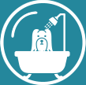
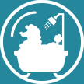
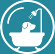
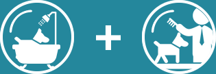
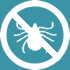
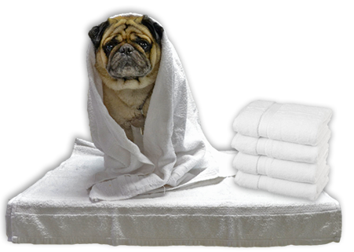

Adote! | Sobre a Power Dog| Central do Cliente
Power Dog
Cuidados com os Pets
Banho Profissional
Sabe aquele banho que seu animal precisa pra continuar subindo no seu sofá? Sem ficar aquele cheirinho ruim dentro de casa... E o mais importante: pra garantir a saúde do pelo e da pele! O Banho Profissional da Power Dog garante o seu pet saudável e cheiroso por mais tempo.
Banho Premium
Esse é para os pets que querem um cuidado especial. Depois de muita diversão, algumas raças acabam ficando o pelo muito embolado. Para preservar a pelagem e evitar problemas dermatológicos, o recomendado por veterinários é sempre o desembolo da pelagem – e com o Banho Premium e a linha MegAmazon da Pet Society, a sua mascote sai completamente tratado além de um cheirinho super especial de açaí e guaraná ou cupuaçu! Ideal também para pets que querem um banho diferenciado, com uma maior durabilidade e perfumes únicos!
Banho FURminator®
O banho que resolve o maior problema dos tutores: acaba com a queda de pelos! Com uso da ferramenta de renome mundial garantimos redução em até 90% dos pelos espalhados pela casa: isso significa o fim dos pelos espalhados pelo chão, carro, sofá, cama, roupas, etc. Com a retirada de sub-pelos e pelos mortos, a pelagem como um todo fica mais viva e brilhosa.
Banho e Tosa
Seja por motivos de saúde da pelagem, de calor ou estéticos, é sempre bom manter a tosa dos nossos pets em dia, não é mesmo? A tosa é feita da sua preferência, no padrão da raça ou não, tudo realizado pelas mãos dos nossos tosadores especialistas sem distinção de preço entre tosa na máquina ou tesoura – o que importa na Puro Afeto é o que a mascote precisa e o tutor deseja!
E o que mais?
Hidratação
Temos três tipos de hidratações que são recomendadas de acordo com o tipo e o estado do pelo de seu animal: Máscara de Reconstrução Argan, Máscara de Nutrição Liso Perfeito e Máscara de Nutrição Volume Máximo. Pergunte ao nosso pessoal a mais recomendada e veja a diferença!
Cauterização
A Cauterização tem o intuito de garantir a manutenção dos nutrientes na pelagem do animal por mais tempo através do fechamento da cutícula, dessa forma os efeitos de higiene e estética das hidratações e do próprio banho durarão por mais tempo.
Pigmentação
Este serviço serve para realçar as cores originais e dar mais brilho ao pelo do animal, dando mais vida e maciez. Recomenda-se fazer ao menos três sessões de pigmentação para um melhor resultado.
Anti-Pulgas / Carrapaticida
O banho com shampoo anti-pulgas/carrapaticida tem o poder de matar e remover os parasitas do pelo e da pele do seu animal; entretanto ele não tem agente preventivo e para isso você deve recorrer às coleiras e/ou remédios em geral.
E a Qualidade?
Equipe de primeira linha: Não adiantaria nada oferecer a melhor infraestrutura, insumos e equipamentos se não tivéssemos o pessoal capacitado para atender os animais e também os tutores, por isso temos profissionais de alto nível e ampla experiência e mantemos capacitação contínua. Para os animais, cuidado; para os tutores, tranquilidade.
Oferecemos serviços de primeira linha e únicos em Belo Horizonte; com a linha de produtos da Hydra by Pet Society, marca referência de mercado, conseguimos deixar o pelo do animal mais macio e limpo por mais tempo.
Ambiente climatizado: todas as unidades têm ar condicionado dimensionado especificamente para aquele espaço, de forma a manter uma temperatura adequada a qualquer hora do dia, independentemente da quantidade de animais, pessoas e secadores sendo utilizados.
Espaço Anti-Stress: em todas as unidades, as gaiolas estão em ambientes separados (mas sempre à vista de funcionários) da parte de secagem. Por que? Esse é um ambiente com muito barulho dos equipamentos e então criamos essa solução para que os pets fiquem resguardados dos ruídos e muito mais relaxados.
Caixas acústicas: em todas nossas unidades, os sopradores (que são os equipamentos que fazem mais barulho) são colocados dentro de caixas acústicas para reduzir os decibels que emitem, fazendo com que mesmo os animais que estão sendo secados no momento sejam menos incomodados.
Na power Dog não há reutilização de toalhas! Sua mascote recebe uma toalha limpa, esterilizada e embalada individualmente, evitando a transmissão de possíveis doenças e impurezas.